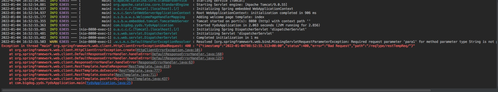
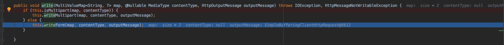
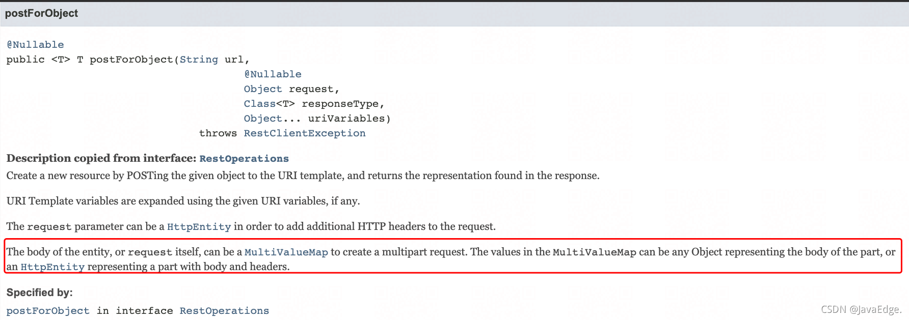

RestTemplate为何必须搭配MultiValueMap
本文最后更新于：2022年10月31日 早上
微服务之间的大多都是使用 HTTP 通信，这自然少不了使用 HttpClient。
在不使用 Spring 前，一般使用 Apache HttpClient 和 Ok HttpClient 等，而一旦引入 Spring，就有了更好选择 - RestTemplate。
接口：
@PostMapping("/restTempReq")
public String restTempReq(@RequestParam("para1") String para1,
@RequestParam("para2") String para2) {
return "The param is :" + para1 + "," + para2;
}
想接受一个 Form 表单请求，读取表单定义的两个参数 para1 和 para2，然后作为响应返回给客户端。
定义完接口后，使用 RestTemplate 来发送一个这样的表单请求，代码示例如下：
@SpringBootApplication
public class YydsApplication {
public static void main(String[] args) {
ConfigurableApplicationContext context = SpringApplication.run(YydsApplication.class, args);
RestTemplate restTemplate = new RestTemplate();
Map<String, Object> paramMap = new HashMap<>();
paramMap.put("para1", "001");
paramMap.put("para2", "002");
String url = "http://localhost:8080/reqType/restTempReq/";
String result = restTemplate.postForObject(url, paramMap, String.class);
System.out.println(result);
context.close();
}
}
上述代码定义了一个 Map，包含了 2 个表单参数，然后使用 RestTemplate 的 postForObject 提交这个表单。
执行代码提示 400 错误，即请求出错：

就是缺少 para1 表单参数，why？
解析
RestTemplate 提交的表单，最后提交请求啥样？ 可以抓包看下请求 Content-Type: application/json
实际上是将定义的表单数据以 JSON 提交过去了，所以我们的接口处理自然取不到任何表单参数。
why？怎么变成 JSON 请求体提交数据呢？注意 RestTemplate 执行调用栈：
最终使用的 Jackson 工具序列化了表单
用到 JSON 的关键原因在
RestTemplate.HttpEntityRequestCallback#doWithRequest
public void doWithRequest(ClientHttpRequest httpRequest) throws IOException {
super.doWithRequest(httpRequest);
Object requestBody = this.requestEntity.getBody();
if (requestBody == null) {
HttpHeaders httpHeaders = httpRequest.getHeaders();
HttpHeaders requestHeaders = this.requestEntity.getHeaders();
if (!requestHeaders.isEmpty()) {
requestHeaders.forEach((key, values) -> {
httpHeaders.put(key, new ArrayList(values));
});
}
if (httpHeaders.getContentLength() < 0L) {
httpHeaders.setContentLength(0L);
}
} else {
Class<?> requestBodyClass = requestBody.getClass();
Type requestBodyType = this.requestEntity instanceof RequestEntity ? ((RequestEntity)this.requestEntity).getType() : requestBodyClass;
HttpHeaders httpHeadersx = httpRequest.getHeaders();
HttpHeaders requestHeadersx = this.requestEntity.getHeaders();
MediaType requestContentType = requestHeadersx.getContentType();
Iterator var8 = RestTemplate.this.getMessageConverters().iterator();
while(var8.hasNext()) {
HttpMessageConverter<?> messageConverter = (HttpMessageConverter)var8.next();
if (messageConverter instanceof GenericHttpMessageConverter) {
GenericHttpMessageConverter<Object> genericConverter = (GenericHttpMessageConverter)messageConverter;
if (genericConverter.canWrite((Type)requestBodyType, requestBodyClass, requestContentType)) {
if (!requestHeadersx.isEmpty()) {
requestHeadersx.forEach((key, values) -> {
httpHeadersx.put(key, new ArrayList(values));
});
}
this.logBody(requestBody, requestContentType, genericConverter);
genericConverter.write(requestBody, (Type)requestBodyType, requestContentType, httpRequest);
return;
}
} else if (messageConverter.canWrite(requestBodyClass, requestContentType)) {
if (!requestHeadersx.isEmpty()) {
requestHeadersx.forEach((key, values) -> {
httpHeadersx.put(key, new ArrayList(values));
});
}
this.logBody(requestBody, requestContentType, messageConverter);
messageConverter.write(requestBody, requestContentType, httpRequest);
return;
}
}
String message = "No HttpMessageConverter for " + requestBodyClass.getName();
if (requestContentType != null) {
message = message + " and content type "" + requestContentType + """;
}
throw new RestClientException(message);
}
}
根据当前要提交的 Body 内容，遍历当前支持的所有编解码器:
若找到合适编解码器，用之完成 Body 转化
看下 JSON 的编解码器对是否合适的判断
AbstractJackson2HttpMessageConverter#canWrite
public boolean canWrite(Class<?> clazz, @Nullable MediaType mediaType) {
if (!this.canWrite(mediaType)) {
return false;
} else {
if (mediaType != null && mediaType.getCharset() != null) {
Charset charset = mediaType.getCharset();
if (!ENCODINGS.containsKey(charset.name())) {
return false;
}
}
ObjectMapper objectMapper = this.selectObjectMapper(clazz, mediaType);
if (objectMapper == null) {
return false;
} else {
AtomicReference<Throwable> causeRef = new AtomicReference();
if (objectMapper.canSerialize(clazz, causeRef)) {
return true;
} else {
this.logWarningIfNecessary(clazz, (Throwable)causeRef.get());
return false;
}
}
}
}
可见，当使用的 Body 为 HashMap，是可完成 JSON 序列化的。
所以后续将这个表单序列化为请求 Body了。
但我还是疑问，为何适应表单处理的编解码器不行？
那就该看编解码器判断是否支持的实现：
FormHttpMessageConverter#canWrite
public boolean canWrite(Class<?> clazz, @Nullable MediaType mediaType) {
if (!MultiValueMap.class.isAssignableFrom(clazz)) {
return false;
} else if (mediaType != null && !MediaType.ALL.equals(mediaType)) {
Iterator var3 = this.getSupportedMediaTypes().iterator();
MediaType supportedMediaType;
do {
if (!var3.hasNext()) {
return false;
}
supportedMediaType = (MediaType)var3.next();
} while(!supportedMediaType.isCompatibleWith(mediaType));
return true;
} else {
return true;
}
}
可见只有当我们发送的 Body 是 MultiValueMap 才能使用表单来提交。
原来使用 RestTemplate 提交表单必须是 MultiValueMap！
而我们案例定义的就是普通的 HashMap，最终是按请求 Body 的方式发送出去的。
修正
换成 MultiValueMap 类型存储表单数据即可：
MultiValueMap<String, Object> paramMap = new LinkedMultiValueMap<>();
paramMap.add("para1", "001");
paramMap.add("para2", "002");
修正后，表单数据最终使用下面的代码进行了编码：
FormHttpMessageConverter#write

发送出的数据Content-Type: application/x-www-form-urlencoded;charset=UTF-8
这就对了！其实官方文档也说明了：
